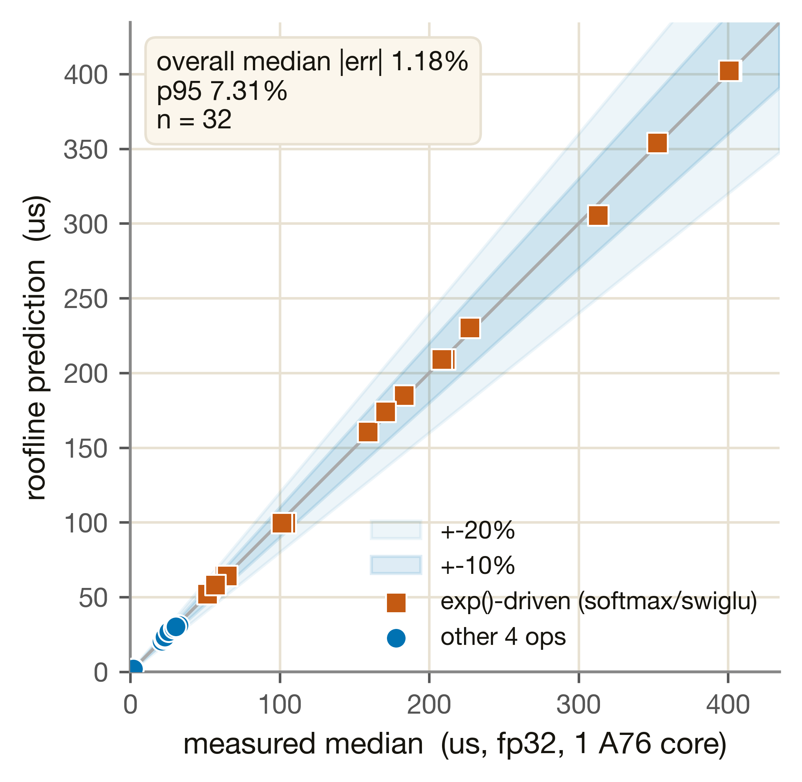
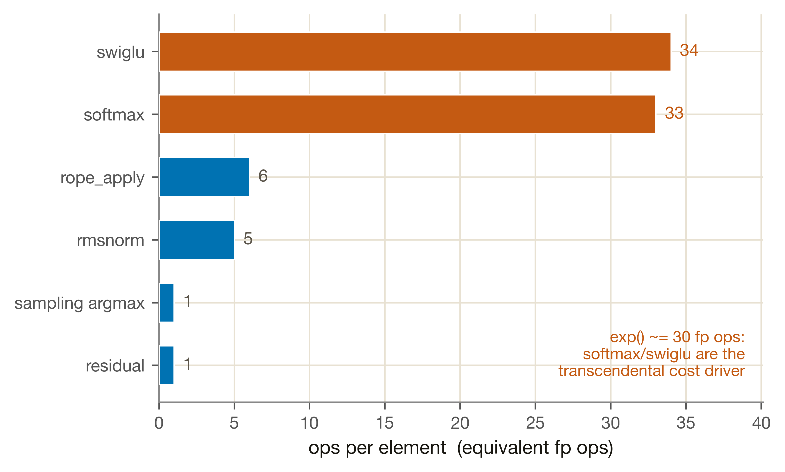

ARM A76 支援算子單元
GEMM 交給 CIM、attention BMM 交給 GPU，但每一層、每個 token 還有六類非 GEMM 的支援算子必須跑在 CPU。M4-CPU 用一條指令數 roofline 把這六個算子的延遲算準，成本主因是 softmax/swiglu 裡的 exp() 超越函數。
異質 SoC 裡，大型矩陣乘法（GEMM）交給 CIM/NPU、attention BMM 交給 GPU，但 LLM 推論每一層、每個 token 還有六類非 GEMM 的支援算子必須跑。Profile 把它們全部指派給 RK3588 的 CPU 叢集（big.LITTLE：4×A76@2.3GHz + 4×A55@1.8GHz）。M4-CPU 的基本功能就是把這六件事的延遲算準：
① 三個輕量 elementwise/reduction 算子——residual（殘差相加）、rmsnorm（layer norm）、rope_apply（旋轉位置編碼套用），每個元素只有幾個浮點運算。② 兩個 exp() 驅動算子——softmax（attention 機率歸一）與 swiglu（FFN 閘控激活），exp() 是超越函數、一次展開成約 30 個融合浮點運算，是成本主因。③ 一個 vocab 掃描算子——sampling_argmax（詞彙表 argmax 取樣），元素數 = vocab 大小 V。
模型把這六個算子都丟進同一條指令數 roofline：latency = max(compute, memory) + overhead_op。M4-CPU 是有真矽校準的單元（η_c + per-op overhead 對 fp32 量測校準），但 A55、多核、fp16、prefill 都是解析外推（simulated chip 亮著）；η_bw 為 assumption（warn）。calibration basis 只覆蓋單 A76 核、單執行緒、numpy fp32、decode（1 token）。
量測協定：在 Aetina 板（RK3588）上 pin 到單一 A76 核、單執行緒，用 numpy fp32 逐一量六個支援算子的 per-token 延遲（cpu_ops.json，4 個模型 × 各算子，softmax 另掃 kv∈{128,512,1024}）。這是唯一的矽晶校準基準——fp32、單核、decode。下圖用兩種視角呈現量測：六個算子實測 vs roofline 預測的對位，以及「為什麼 softmax/swiglu 這麼貴」的結構成本。
1a · 六個算子：實測 vs 指令數 roofline
把每個 fp32 量測點（四個模型，softmax 含 kv-sweep，共 32 點）的實測中位數對上 §2 roofline 的預測，畫成 parity 圖看貼合度：

exp() 驅動的 softmax/swiglu，落在高延遲區（100–400µs，因 ops_per_elem 大）；藍圓 = 其餘四個輕量算子，集中在低延遲區（<65µs）。多數點落在 ±10% 內、全數在 ±20% 容差內（最大殘差 13.12%），整體中位誤差 1.18%、p95 7.31%——這就是 §4 門檻 PASS 的視覺版。指令數 roofline 把 softmax 與 swiglu 的高成本結構性地算出來，不靠查表。
圖 M4·CPU·1 · 來源 cpu_ops.json（fp32 median）vs CpuModel roofline · 腳本 tools/plotting/site_cpu.py
1b · 成本主因：exp() 超越函數
為什麼 softmax/swiglu 比其他算子貴一個數量級？看 ops_per_elem（每元素的等效浮點運算數，結構性假設）：

exp() 驅動——一次 exp() 在 numpy fp32 上展開成約 30 個融合浮點運算，所以這兩個算子的 ops_per_elem 遠大於其餘。藍條是輕量算子：rope_apply 6（旋轉 pair 乘法）、rmsnorm 5（square/rsqrt/scale）、sampling_argmax 與 residual 各 1（一次 compare / 一次加法）。這不是 reduction/elementwise 二分法，而是「transcendental 是成本主因」的結構假設——§1a 的 parity 證明它預測得準。
圖 M4·CPU·2 · 來源 m4_cpu_instrcount.json › ops_per_elem · 腳本 tools/plotting/site_cpu.py
指令數 roofline 公式
公式怎麼讀：每個算子取 compute 與 memory 兩支的較大者（roofline），再加一個固定 dispatch 開銷 overhead_op。compute 支是「總運算量 / NEON 算力 / 達成率」；memory 支是「工作集位元組 / 快取層頻寬 / 達成率」。decode 支援算子的工作集全部落在 L1/L2/L3 快取，永遠不觸碰 host LPDDR——所以 memory 支用快取頻寬、不是 DRAM。每個參數的物理意義：
| 參數 | 值 | 物理意義 |
|---|---|---|
| eta_c（η_c） | 0.1521 | numpy 達成的峰值算力比例，對 fp32 cpu_ops.json 校準（calibrated）。涵蓋 numpy 解譯、非 SIMD 化、scheduling 等實際損耗 |
| W·IPC·freq（單 A76 核） | 18.4 G lane-op/s | NEON 算力：4 lanes（fp32 128-bit）× IPC 2 × 2.3GHz。多核即加總 Σ_assigned（外推） |
| ops_per_elem | 1 / 5 / 6 / 33 / 34 | 每元素等效浮點運算數（結構性假設）。exp() ≈ 30 fp ops 使 softmax/swiglu 成為成本主因（見 §1b） |
| overhead_op（per-op 常數） | 22.525 µs（rope） 0.0 µs（swiglu） | 固定 dispatch 開銷（calibrated）：rmsnorm 16.815、rope 22.525、softmax 15.497、sampling 7.357、residual 0.789、swiglu 0.0 µs |
| eta_bw（η_bw） | 0.6 | 快取頻寬達成率，assumption（fp32 decode 資料無純頻寬解析算子、repo 無 CPU mem-BW micro-benchmark；見 §4 缺口）。文獻常見快取效率佔位值 |
| BW_tier（依工作集選層） | L1 73.6 · L2 36.8 · L3 18.4 GB/s | 快取層頻寬（A76 TRM 推估，assumption）：依殘留大小選 L1d（64KiB/核）→ L2（512KiB/核）→ L3（3MiB 共享）。decode 工作集只在這三層 |
working_set_bytes = n_elem × bytes_per_elem × byte_passes；快取殘留大小（選層用）= n_elem × bytes_per_elem（單份拷貝，不乘 byte_passes）。在 fp32 decode 資料中，只有 qwen 的 vocab op（V=152K，工作集 594KiB 超過 L2、落入 L3）真正走 memory 分支，其餘全是 compute-bound 或 overhead-dominant。M4-CPU 不掛任何 heavy-sim 引擎。本節的「模擬」= 從單 A76 fp32 decode 校準基準解析外推到未量測的組態，全部標 simulated。
| 路徑 | 方法 | 誠實標籤 |
|---|---|---|
| 多核（A76） | 核數加入 Σ_assigned[W·IPC·freq] 計算，compute 支按比例下降 | ⚠ simulated（外推） |
| A55（little 核） | IPC=1（單 NEON pipeline）、1.8GHz，沿用 η_c、overhead | ⚠ simulated（未量測） |
| fp16 | 解析原生 fp16：fp16_lanes=8（2× fp32 SIMD）+ 2-byte 元素，η_c 沿用 fp32 | ⚠ simulated（非校準） |
| prefill（S>1） | fixed op × S、softmax ≈ S² 解析外推 | ⚠ 完全未驗證 |
cpu_ops.json 的 fp16 量測是 numpy 模擬，比 fp32 慢約 4×（例如 8B sampling_argmax：fp16 985.52µs vs fp32 52.50µs，比值約 19×），不代表原生 fp16。故 recompose 端到端一律走 fp32 校準路徑；fp16 roofline 為解析估計，可用但需標 simulated。Phase 1.1 儲存的 fp16 常數可視為保守上界，已被 Phase 1.2 指令數 roofline 取代。| 指標 | 值 | 門檻 | 結果 |
|---|---|---|---|
| 整體中位誤差 | 1.18% | ≤ 10% | ✅ PASS |
| 整體 p95 誤差 | 7.31% | ≤ 15% | ✅ PASS |
| 整體最大誤差 | 13.12% | — | 呈現不隱藏 |
逐算子殘差（fp32，4 個模型）：softmax 中位 0.81%、swiglu 1.87%、sampling_argmax 1.10%（qwen vocab 走 memory 分支）、rmsnorm 1.45%、rope_apply 1.86%、residual 5.84%。residual 是六者中最大，根源是量測噪音：cpu_ops.json 顯示 residual 的 CoV 高達 0.25、延遲本身僅 1.75–2.04µs（接近 perf_counter 解析度），模型誤差落於其自身量測噪音範圍內，此為 overhead-dominant 行為、非模型缺陷。
m4_cpu 以 a + b·kv 擬合 softmax、其餘算子為查表常數（softmax fit gate：中位 0.3%、p95 1.8%、max 3.4%，PASS）。Phase 1.2 指令數 roofline 是 Phase 1.1 查表的超集（多了尺寸外推能力），舊報告保留作歷史記錄。| 項目 | 狀態 |
|---|---|
fp32 decode roofline（單 A76 核）op_us(op, model) | ✅ 凍結，calibrated（中位 1.18%） |
模型可換性（換 cpu_rk3588.json 即換型號，引擎碼不動） | ✅ 就緒 |
| 端到端 recompose 接線（直接供 M5 trace 消費） | ✅ 就緒，走 fp32 校準路徑 |
| fp16 decode 估計 | ⚠ simulated（解析原生 fp16，非校準） |
| A55 / 多核 | ⚠ simulated（外推，未量測） |
| prefill 支援算子（fixed op × S、softmax S²） | ⚠ 缺口：解析外推，完全未驗證 |
eta_bw 校準 | ⚠ assumption；修補路徑 = CPU mem-BW micro-benchmark（stream-like op） |
| residual 量測噪音（CoV 0.25） | ✅ 已記錄：非模型缺陷，量測解析度限制 |
M4-CPU 在 fp32 decode 路徑上完整就緒，可直接進 Phase 2 端到端模擬。剩餘缺口（eta_bw、fp16、A55、prefill）已全部表面化並記錄在 validation/contracts/m4_cpu.yaml 的 gaps 欄位中——沒有隱藏外推。
- 整體 / 逐算子殘差：
validation/reports/phase1.2/m4_cpu.json › overall_residual_pct, residuals_pct - 校準參數：
simulator/models/params/m4_cpu_instrcount.json › eta_c, eta_bw, overhead_op_us, ops_per_elem, byte_passes - CPU spec：
simulator/specs/cpu_rk3588.json › clusters, neon, cache, cache_bw_GBs, notes, provenance - 校準基準量測：
measurements/aetina/cpu_ops.json（fp32, 單 A76 核, 單執行緒） - acceptance criteria / gaps：
validation/contracts/m4_cpu.yaml › acceptance_criteria, gaps, superseded - Phase 1.1 遺留（softmax 線性擬合）：
validation/reports/phase1.1/m4_cpu.json › softmax_fit_gate - 引擎：
simulator/models/m4_cpu.py › CpuModel（latency = max(compute, memory) + overhead_op）